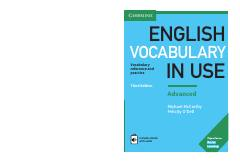

EVIlg'or darajadagi ingliz tili o'rganuvchilar uchun so'z boyligini oshirish va amaliyot kitobi.
Ushbu qo'llanma ilg'or (C1-C2) darajadagi ingliz tili o'rganuvchilari uchun mo'ljallangan bo'lib, keng qamrovli so'z boyligi va amaliy mashg'ulotlarni o'z ichiga oladi. Kitob kundalik va akademik muloqotda kerak bo'ladigan zamonaviy so'zlarni kontekstda o'rganishga yordam beradi. Mustaqil ta'lim olish va sinf mashg'ulotlari uchun birdek mos keladi.